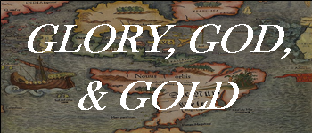

Precolonial Time Period | Colonial Time Period | Market Revolution Period | Antebellum Time Period | Civil War and Reconstruction Time Period | Westward Expansion Time Period

Hello! My name is Adam Lee and I think that early Americans’ pursuit of God, glory, or gold in early American history has shaped what is now American society in the present day. I think that each time period of early American history has contributed at least a small part to modern American society because in each time period the early Americans were in pursuit of God, glory, or gold. This pursuit is what drove the early Americans into new lands, ideas, new eras of history, and many other and exciting new things! If early Americans did not pursuit God, glory, or gold, then modern American society would be much different that what is is now.
(Note: The Precolonial Time Period is my product sample and the other time periods do not have any information but you are welcome to click on them)